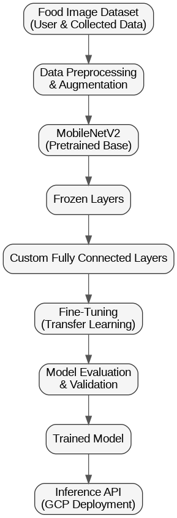
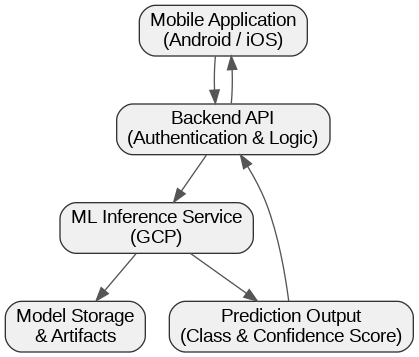

Gloo — Diabetes Prevention & Care Mobile App
AI-powered food recognition for healthier lifestyle decisions

Project Overview
Gloo is a mobile health application focused on diabetes prevention and early awareness through technology-driven solutions. The application was developed as a Capstone Project for Bangkit Academy, requiring close collaboration across Machine Learning, Cloud Computing, and Mobile Development teams.
Beyond its academic scope, Gloo also won a national student-level technology-based business plan competition, validating both its technical feasibility and real-world impact potential.
Business Problem
Diabetes is a chronic condition with rapidly increasing prevalence, yet many cases can be prevented through better awareness of daily dietary choices. A major challenge lies in helping users identify food types accurately and understand their implications in a practical, accessible way.
Gloo addresses this problem by enabling users to upload food images and receive AI-powered insights, bridging the gap between nutrition awareness and everyday habits.
My Role — Machine Learning Engineer
I worked as part of the Machine Learning team, responsible for building and delivering an end-to-end image classification model for food recognition. My responsibilities included data collection, labeling, model development, evaluation, iteration, and deployment.
Technical Approach

The model was built using a MobileNetV2 pretrained architecture, chosen for its efficiency and suitability for mobile and cloud-based inference. We applied a transfer learning approach by freezing the majority of the pretrained layers and training only the final fully connected layers based on our specific food classification outputs.
This approach allowed us to achieve strong performance while keeping training time and computational cost efficient.
Deployment & System Integration

The trained model was deployed on Google Cloud Platform (GCP) as a REST API. The mobile application sends image inputs to the backend, which forwards inference requests to the ML service and returns predictions to the user in real time.
Challenges
The biggest challenge was not model training itself, but integrating deep learning into a complete production-ready product. This required close coordination with backend and mobile teams, careful API design, and alignment between technical constraints and product requirements.
Lessons Learned
This project reinforced the idea that Machine Learning is only one component of a larger system. Successful AI products require strong collaboration, deployment awareness, and a product-oriented mindset beyond model accuracy alone.